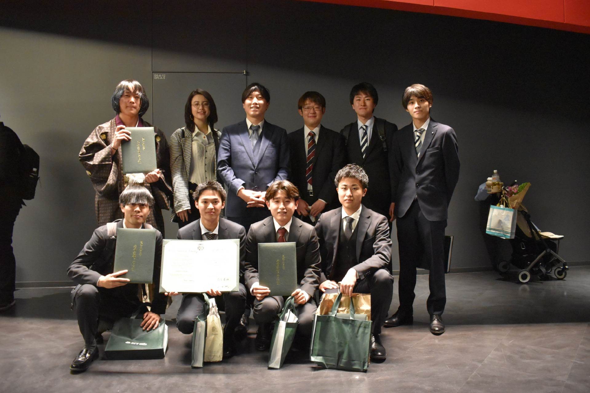
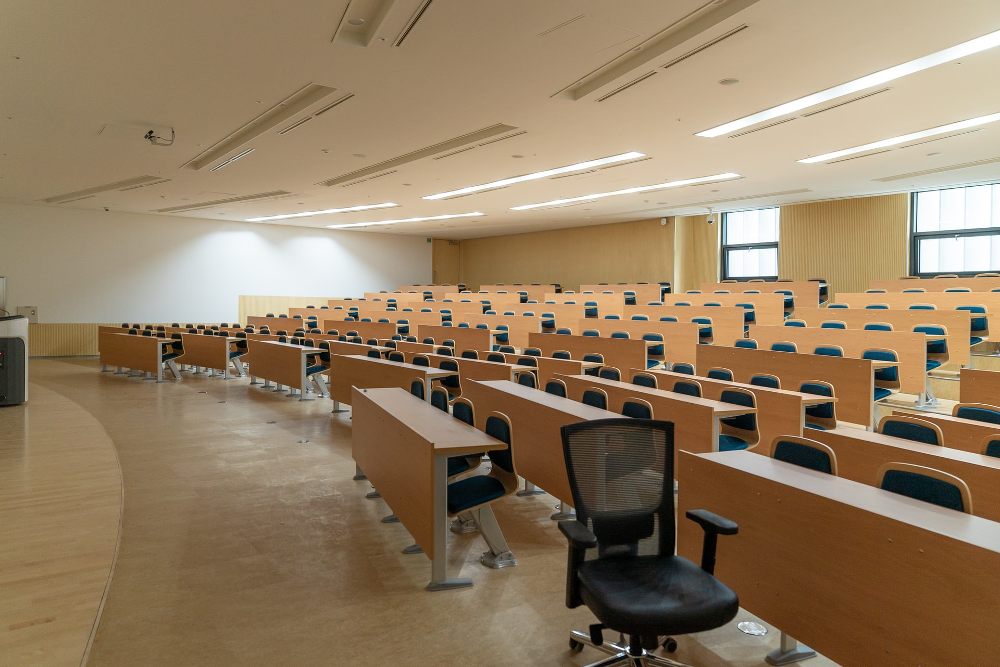
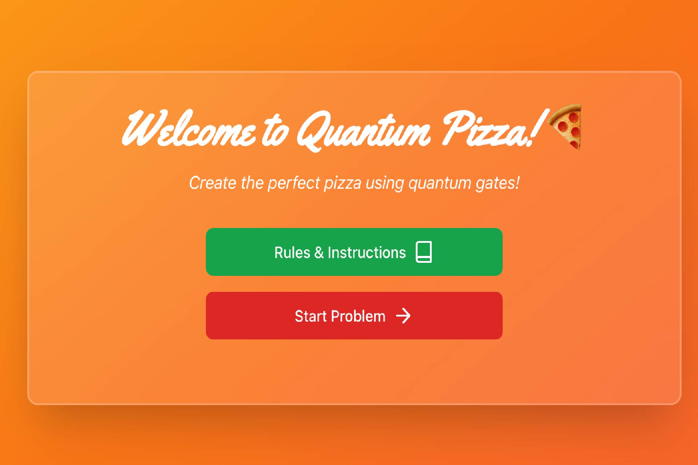
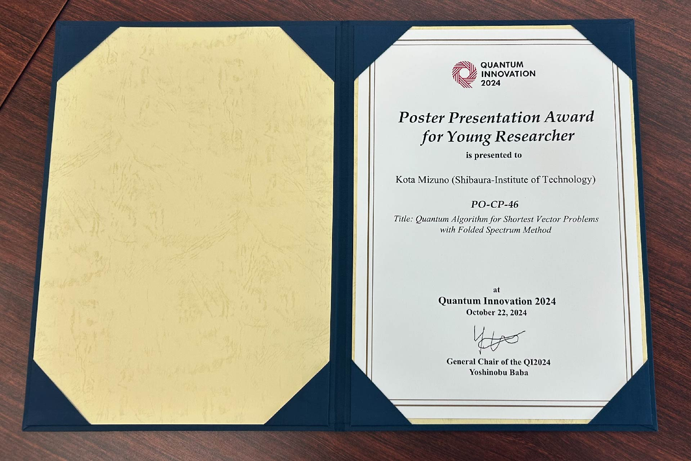
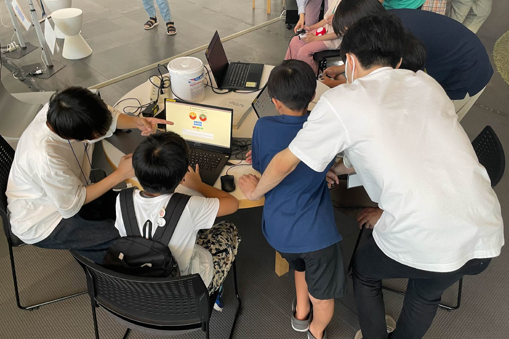
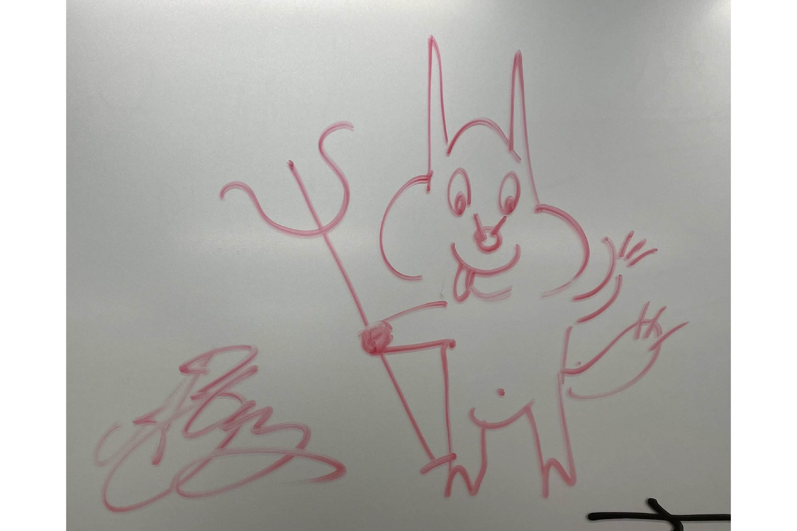

研究室の立ちあげに尽力した初代の研究室メンバー(修士)と2024年度の卒研生が卒業しました．これからのさらなる飛躍を心よりお祈り申し上げます．
巡回セールスマン問題に対して，エンコード空間から実行可能解，実行可能解から最適解と２段階で実行するGroverアルゴリズムの論文がIEEE Transactions on Quantum Engineeringに掲載されました．KDDI・東京理科大学・慶應義塾大学との共同研究です．
KPO(Kerr parametric oscillator)で猫状態をもつれさせることに成功した論文がNature Communicationsに掲載されました．Moonshotによる東京理科大学の蔡先生・吉原先生・Kwonさんらとの共同研究の成果です．

2025年 暗号と情報セキュリティィシンポジウムで修士2年生の狩野さんが口頭発表しました．
周期駆動Bose系のFloquetスペクトル関数に関する論文を投稿しました．OISTの比屋根さん，Zlabysさん，Buschさんとの共同研究の成果です．

修士1年生の水野さんが作成したアプリ"Quantum Pizza"がQ-Portalで紹介されました．

修士1年生の水野さんがQuantum Innovation 2024でPoster Presentation Awards for Young Researchersを受賞しました！
複雑ネットワーク上の量子空間探索に関する普遍性に関する研究成果がPhys. Rev. Researchに掲載されました．東京理科大学の佐藤さん・二国先生，東京工業大学のSalani先生・野原先生との共同研究の成果です．
non-FTQCアルゴリズムのベンチマークに関する論文を投稿しました．修士2年生の井形さん・菊浦さん・東京理科大学の神宮さんとの共同研究の成果です．
量子ソフトウェア研究会で修士１年生の水野さんが口頭発表しました．
拘束付き量子アニーリングに関する論文を投稿しました．修士2年生の井形さん・修士1年生の李さん・慶應義塾大学の関さん・北海道大学の水野さんとの共同研究の成果です．
Quantum Innovation 2024で修士１年生の水野さんがポスター発表しました．
INQA Conference 2024で修士１年生の水野さんと渡部がポスター発表しました．
最短ベクトル問題に対する量子計算の活用に関する論文を投稿しました．修士１年生の水野さんとの共同研究の成果です．

日本科学未来館のイベント"クイズとゲームでせまる！量子コンピュータ"で，当研究室大学院生の菊浦さんと水野さんが作成した量子コンピュータのゲームが展示されました．当HPのApplicationからも体験できます！
前期卒研発表会が終了しました！お疲れ様でした．

当研究室に英国Loughborough大学のAlexandre Zagoskin先生がいらっしゃいました．
KPO(Kerr parametric oscillator)で猫状態をもつれさせることを実証した論文を投稿しました．Moonshotによる東京理科大学の蔡先生・吉原先生・Kwonさんらとの共同研究の成果です．
生成AIを使ったハッカソンで，研究室の学生たちが最優秀賞を獲得しました．
超流動体におけるモーメント法の枠組みを構築し，第一音波・第二音波について解析した論文がPhys.Rev.Aから出版されました．OISTの比屋根さん，東京理科大学の二国先生との研究成果です．
後期卒研発表会が終了しました！お疲れ様でした．